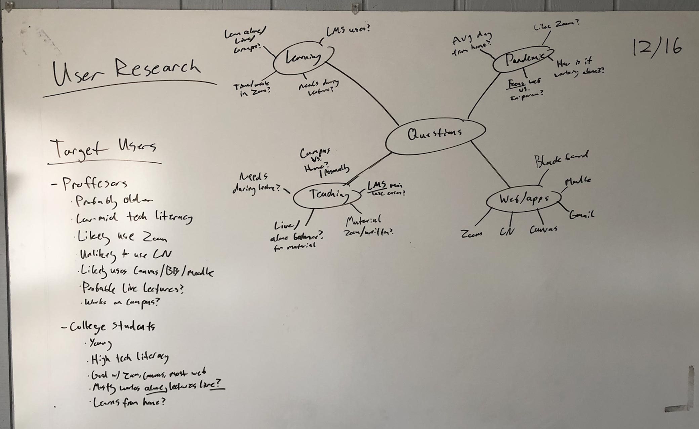
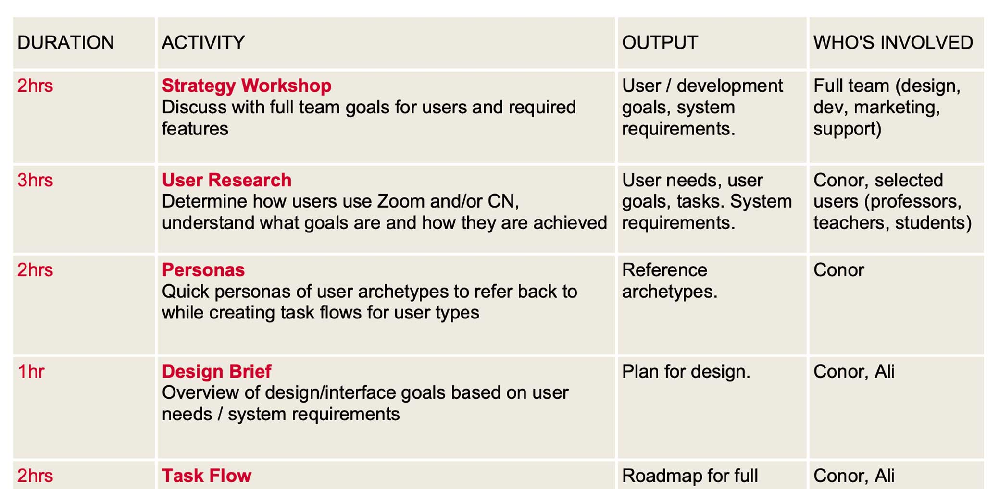
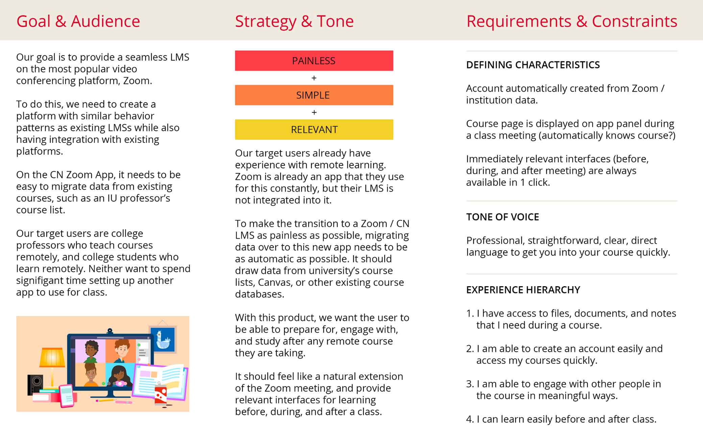
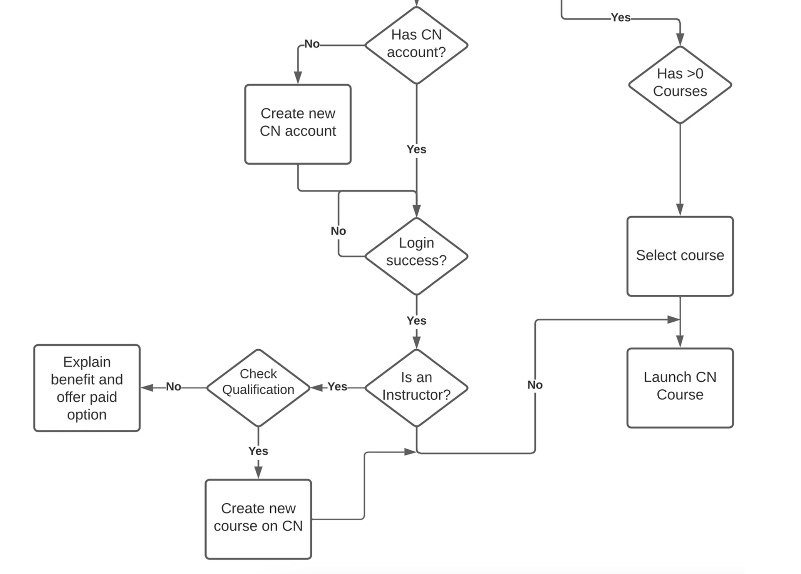
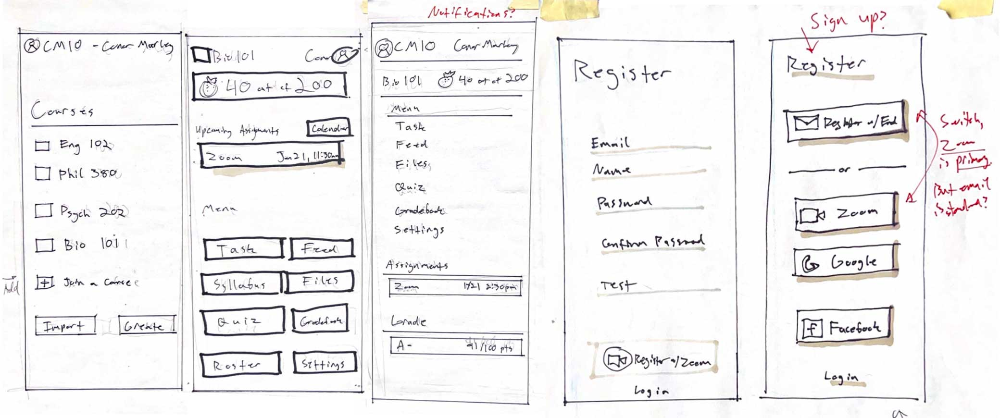
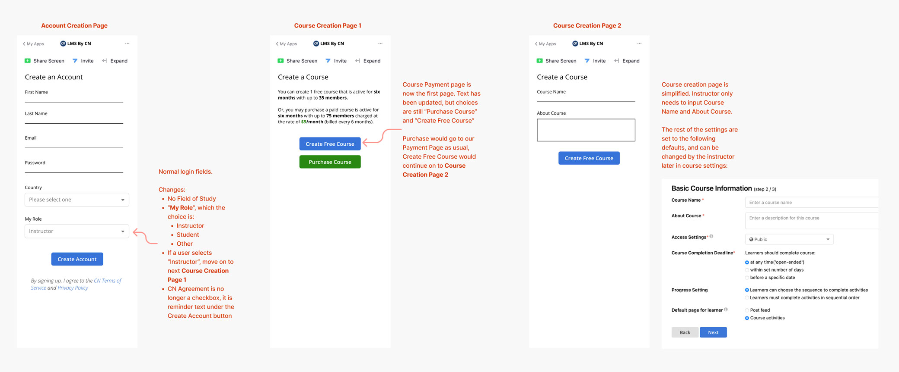
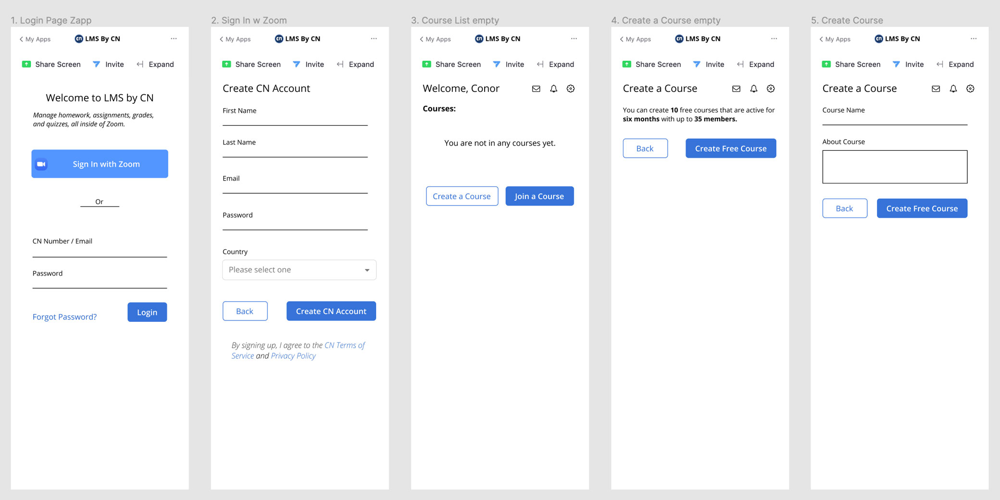
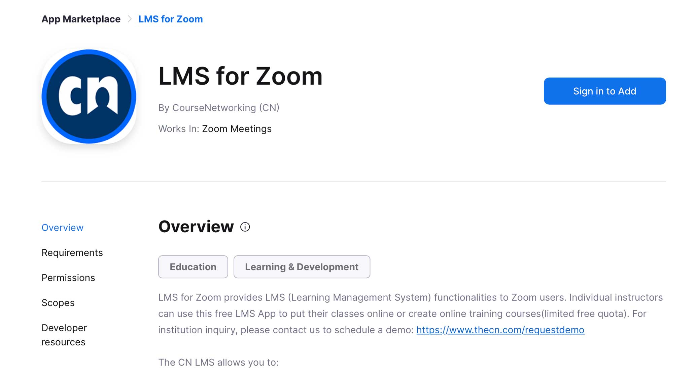

The Design Process
User Research to understand needs:
To understand our user base, I began conducting user research by interviewing existing CN users who were engaging with education remotely. These interviews were conducted over Zoom and lasted about an hour. I wanted to find out about how they use learning management systems, Zoom, and course materials, as well as determine how those fit together.
Through this process, I learned that instructors and students both struggled with connecting with their peers. They can also feel overwhelmed by the amount of new remote technology, so the sign-in process needs to be extremely easy.
This provided us an opportunity to step in as a social LMS complete with posting and ePortfolio features. I also determined that course materials need to be accessed easily and immediately for instructors. Zoom meetings were mostly lectures and note taking for students. Teachers tended to use the LMS features more during class than students did.
UX Project plan for an overview of a large project:
To get a better idea of next steps and timeline, I created a UX project plan. This document detailed every next step in the UX design and final development process and who would be responsible for each step.
It also had the very helpful benefit of demonstrating and explaining parts of the UX design process to my colleagues who were not as familiar with it.
Design Brief to summarize research and orient project
I wanted a single, easily-digestible document to pass out to stakeholders to demonstrate the value of UX research and explain what I had learned in the research process.
The main thing I wanted the team to keep in mind was the goals of the users. The instructors and students both needed the Zoom app to be very simple and easy to understand, as they would already be using multiple new technologies due to the shift to remote learning.
Personas to generalize research and focus user flows
To summarize my research and create reference points for my team, I created personas that served as a central focus for the design process and helped build empathy for our users.
- The instructors using this app need an interface that is very simple and gives them quick access to course materials.
- Students want to access their grades and feedback as well as being able to communicate with classmates.
User Flows to understand what the app needs to be able to do
Using the information I gathered from the interviews and referencing the personas, I began making task flows to lay out the user goals and determine how we could get them there smoothly.
An important part of this step was considering where users would start, and how they might be able to navigate back and forth between steps to ensure a comfortable experience. This process significantly influenced the navigation of the design and ensured users could always change decisions in the signup process.
Sketching to quickly communicate first draft of the app
After the user goals and flows were established, I began sketching out ideas for what the app would look like.
Something this process revealed early on was the complexity of some of the course material pages. This helped us early on reduce the number of options in the course home page and keep the sign-up process simple.
Wireframing to start to lock in element placement
With wireframing, I was purposeful about button and navigation placement using existing visual elements, using the personas as guides to getting closer to a final design.
Drawing from the work of the previous phases, I began to finalize the simplified signup, login, and course creation process. I began working with the developers on making sure that the process was technically feasible.
Prototyping to start reviewing and testing
I had two goals with the prototype which was created in Figma:
- create a complete visual interface for approval by business stakeholders,
- and a working, clickable prototype to conduct user testing with.
This final design step brought together all of the previous research
A 1-click login was added, the account creation flow was simplified, an agile navigation was implemented, and the course creation process was reduced to 2 pages.
User Testing to validate design decisions
With a completed prototype, I created goal-oriented task lists for instructors and students, and asked them to complete those tasks. These tasks included:
- Creating a new account
- Finding a course
- Creating a course
- Making a post
With the constraint of a very small team and a low budget, I utilized the students and instructors on the college campus that I work on for testing.
Development to create final product
After the user testing phase was complete and usability issues were resolved, the developers began work on the front-end development.
I lead the testing and QA feedback to the developers via Jira while they worked directly from my Figma file and design documents.
Launch
What happened:
After launching the first public release in the summer of 2022, we received thousands of new users from the Zoom app. This signifies an increase in user retention of 8.5%. I marketing team also reported significant interest from prospective clients about the product.
CN recently secured our first client that uses the CN zoom app for their institution.
Goals achieved:
The app we created went a significant distance in achieving out product goals. The Zoom app succeeded in helping users have more meaningful class time in Zoom by providing social LMS functionality through our post feed discussion tools. It was later determined that some of the course tools provided like Quizzes and Homework management were less helpful for live Zoom lectures, as the user research indicated might be the case. However, these tools were previously built into CN, and required no extra development time.
Lessons learned
This design process demonstrated to me the significant importance of good user research and understanding who your users are. With robust and accurate research, you are able to save a significant amount of time on guessing or discussion, while also avoiding including features that are not useful for your users. Good early research helps save time on each step, points you in a clear direction throughout the design process, and is foundational to a smooth UX design process.